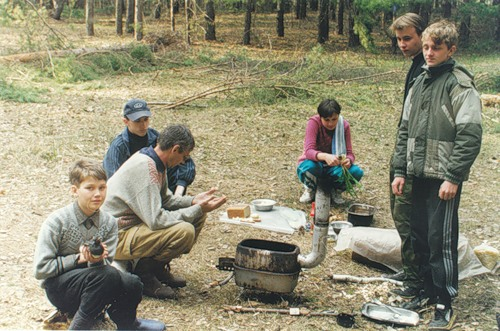
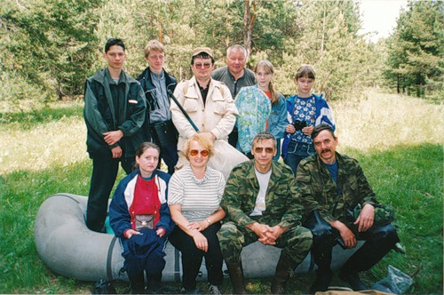
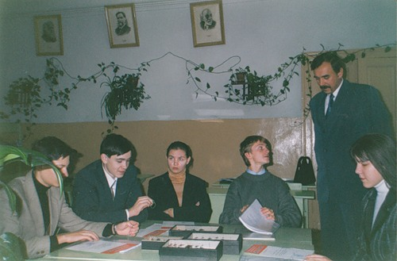
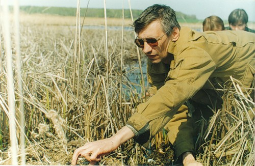
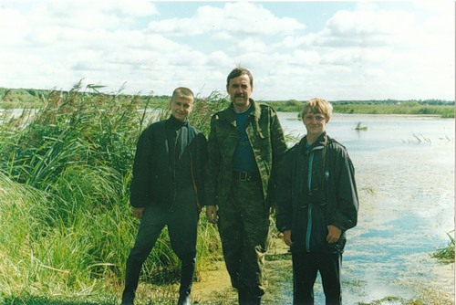

| |
2002 год

Выездная экспедиция на Селитьбинское болото

Селитьба, участники экспедиции

Подведение итогов экспедиций 2002 года

Селитьба, Муравьев И. В.

Взятие проб на Селитьбинском болоте
|
Проводились экспедиции:
1. на Селитьбинское болото с целью учёта видового разнообразия птиц и сбора практического материала для оологического анализа; сбора насекомых; взятия проб зообентоса; в составе участников – учащиеся гимназии № 1 и СШ № 8 города Кузнецка, руководитель Иванов С.В., школьники г. Пензы, студенты ПГПУ, консультанты – преподаватели Пензенского государственного педагогического университета им. В.Г. Белинского, доцент Муравьев И.В., доцент Стойто Т.Г., преподаватели ПГПУ Золина Н.Ф., Полумордвинов О.А., сотрудник заповедника Каратеева Н.В.
2. в Двориковский водно-лесной комплекс, с целью сбора практического материала и обучения учащихся экологической школы методам экологических исследований. Состав экспедиции тот же.
3. продолжался сбор практического материала в пригороде г. Кузнецка и Кузнецком районе отдельными учащимися совместно с руководителями
2001 год
2003 год
2004 год
2005 год
2006 год
2007 год
2008 год
2009 год
| |


{kind=link}
{kind=link}
{kind=link}
{kind=link}
{kind=link}
{kind=link}
{kind=link}
{kind=link}